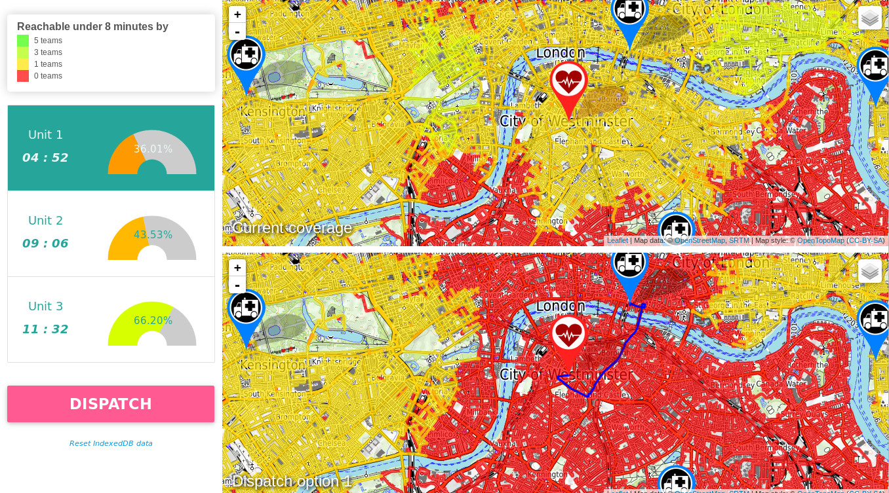
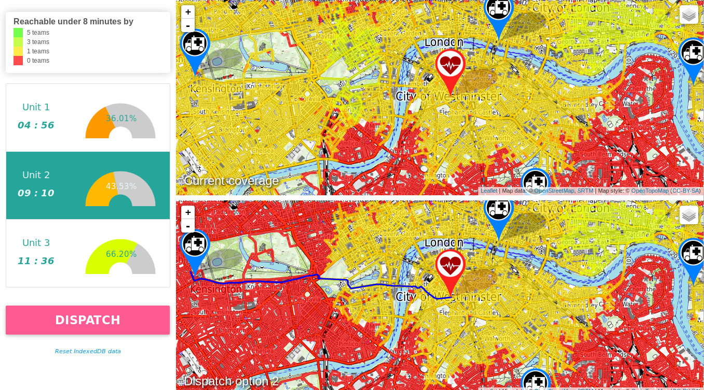
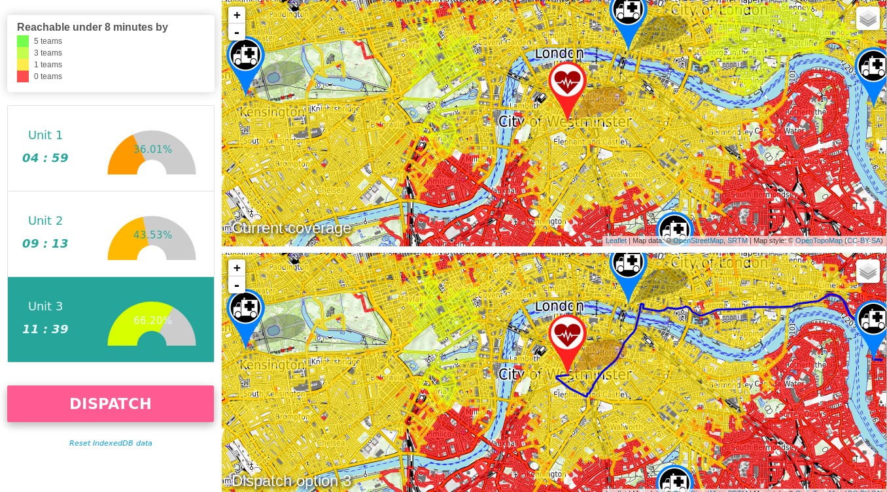

Vers une réponse opérationnelle optimale
par la maitrise de notre couverture
Benjamin Berhault
Efficacité d'un service d'urgence
Bonne décision au bon moment
Efficacité d'un service d'urgence
L'équipe optimale pour une demande de secours
- Nature de l'urgence
- Emplacement de la demande
- Estimation du temps d'acheminement de l'équipe


